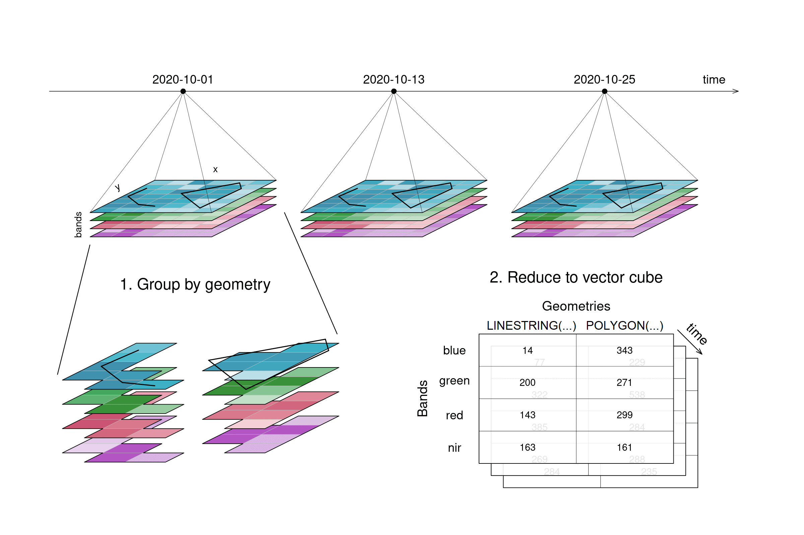

Access EO Data from the Cloud with OpenEO#
Using a cloud provider for accessing data, and in this specific scenario Earth Observation data, could improve your productivity a lot. To get the most out of it, we will provide you some important insights.
Learning objectives#
In this lecture you will learn the usage and peculiarities of the main data operators commonly available on cloud platforms like:
Data loading
Filter
Apply
Reduce
Resample
Aggregate
Finally, you will be able to create a simple workflow with openEO.
The exercise will use the openEO Python Client Side Processing functionality, which allows to experiment using openEO without a connection to an openEO back-end.
Raster Data Loading#
In openEO, your process graph will always start with defining the data you want to load, which can be done mainly using the following processes:
load_collection: loads a collection from the current back-end by its id and returns it as a processable data cube. The data that is added to the data cube can be restricted with the parameters spatial_extent, temporal_extent, bands and properties.load_stac: loads data from a static STAC catalog or a STAC API Collection and returns the data as a processable data cube. A batch job result can be loaded by providing a reference to it. If supported by the underlying metadata and file format, the data that is added to the data cube can be restricted with the parameters spatial_extent, temporal_extent and bands.
Exercise 2.3 Data Access Lazy Loading
References#
Processes on Datacubes#
In the following part, the basic processes for manipulating datacubes are introduced.
Filter#
When filtering data (e.g. filter_spatial, filter_temporal, filter_bands), only the data that satisfies a condition is returned. For example, this condition could be a timestamp or interval, (a set of) coordinates, or specific bands. By applying filtering the datacube becomes smaller, according to the selected data.
:warning: Simplified
filter([üåΩ, ü•î, üê∑], isVegetarian) => [üåΩ, ü•î]
In the image, the example datacube can be seen at the top with labeled dimensions. The filtering techniques are displayed separately below. On the left, the datacube is filtered temporally with the interval ["2020-10-15", "2020-10-27"]. The result is a cube with only the rasters for the timestep that lies within that interval ("2020-10-25") and unchanged bands and spatial dimensions. Likewise, the original cube is filtered for a specific band ["nir"] in the middle and a specific spatial region [Polygon(...)] on the right.
Figure: Datacube filtering: From the datacube 4 by 3 grid, arrows depict what happens if the grid is filtered. Temporal filtering results in data for one timestep with all four bands, filtering bands results in data with one band with all three timesteps, and spatial filtering results in all timesteps and bands being preserved, but all with a smaller area. Reference: openeo.org (2022). Processes on Datacubes.
Apply#
The apply* functions (e.g. apply, apply_neighborhood, apply_dimension) employ a process on the datacube that calculates new pixel values for each pixel, based on n other pixels. Please note that several programming languages use the name map instead of apply, but they describe the same type of function.
:warning: Simplified
apply([üåΩ, ü•î, üê∑], cook) => [üçø, üçü, üçñ]
For the case n = 1 this is called a unary function and means that only the pixel itself is considered when calculating the new pixel value. A prominent example is the absolute() function, calculating the absolute value of the input pixel value.
Figure: Datacube apply unary: 3 example tiles hold values below and above 0. after applying the process ‘absolute’, all values in the three example tiles have changed to their absolute values above 0. Reference: openeo.org (2022). Processes on Datacubes.
If n is larger than 1, the function is called n-ary. In practice, this means that the pixel neighbourhood is taken into account to calculate the new pixel value. Such neighbourhoods can be of spatial and/or temporal nature. A spatial function works on a kernel that weights the surrounding pixels (e.g. smoothing values with nearby observations), a temporal function works on a time series at a certain pixel location (e.g. smoothing values over time). Combinations of types to n-dimensional neighbourhoods are also possible.
In the example below, an example weighted kernel (shown in the middle) is applied to the cube (via apply_kernel). To avoid edge effects (affecting pixels on the edge of the image with less neighbours), a padding has been added in the background.
Figure: Datacube apply spatial kernel: Three example tiles hold some values with a lot of variance. A spatial kernel (a cell plus it’s 4 direct neighbours) is applied to all pixels, and the result appears to be spatially smoothed, with less variance. Reference: openeo.org (2022). Processes on Datacubes.
Of course this also works for temporal neighbourhoods (timeseries), considering neighbours before and after a pixel. To be able to show the effect, two timesteps were added in this example figure. A moving average of window size 3 is then applied, meaning that for each pixel the average is calculated out of the previous, the next, and the timestep in question (tn-1, tn and tn+1). No padding was added which is why we observe edge effects (NA values are returned for t1 and t5, because their temporal neighbourhood is missing input timesteps).

Figure: Datacube apply temporal moving average: Smoothing is applied to 5 example tiles by calculating the mean of 3 timesteps of every single pixel. The resulting tiles for the timestamps look much more alike. Reference: openeo.org (2022). Processes on Datacubes.
Alternatively, a process can also be applied along a dimension of the datacube, meaning the input is no longer a neighbourhood of some sort but all pixels along that dimension (n equals the complete dimension). If a process is applied along the time dimension (e.g. a breakpoint detection), the complete pixel timeseries are the input. If a process is applied along the spatial dimensions (e.g. a mean), all pixels of an image are the input. The process is then applied to all pixels along that dimension and the dimension continues to exist. This is in contrast to reduce, which drops the specified dimension of the data cube. In the image below, a mean is applied to the time dimension. An example pixel timeseries is highlighted by a green line and processed step-by-step.
Figure: Datacube apply dimension time: The mean of all 5 timesteps is calculated for every single pixel. The resulting 5 tiles look exaclty the same, as they have been averaged. Reference: openeo.org (2022). Processes on Datacubes.
Reduce#
The reduce_dimension process collapses a whole dimension of the datacube. It does so by using some sort of reducer, which is a function that calculates a single result from an amount of values, as e.g. mean(), min() and max() are. For example we can reduce the time dimension (t) of a timeseries by calculating the mean value of all timesteps for each pixel. We are left with a cube that has no time dimension, because all values of that dimension are compressed into a single mean value. The same goes for e.g. the spatial dimensions: If we calculate the mean along the x and y dimensions, we are left without any spatial dimensions, but a mean value for each instance that previously was a raster is returned. In the image below, the dimensions that are reduced are crossed out in the result.
:warning: Simplified
reduce([ü•¨, ü•í, üçÖ, üßÖ], prepare) => ü•ó
Think of it as a waste press that does math instead of using brute force. Given a representation of our example datacube, let’s see how it is affected.

Figure: Datacube reduce: Three arrows depict what happens to the 12 example tiles, if they are reduced: Reducing timesteps leads to four tiles (one for each band), and the time dimension is deleted. Reducing bands lead to one tile per timestep, and the bands dimension is deleted. Reducing spatially leads to the original 4 by 3 bands by time layout, but the result has no spatial dimension and thus, the tiles have been turned into single values, per tile. Reference: openeo.org (2022). Processes on Datacubes.
Resample#
In a resampling processes (e.g. resample_cube_spatial, resample_cube_temporal), the layout of a certain dimension is changed into another layout, most likely also changing the resolution of that dimension. This is done by mapping values of the source (old) datacube to the new layout of the target (new) datacube. During that process, resolutions can be upscaled or downscaled (also called upsampling and downsampling), depending on whether they have a finer or a coarser spacing afterwards. A function is then needed to translate the existing data into the new resolution. A prominent example is to reproject a datacube into the coordinate reference system of another datacube, for example in order to merge the two cubes.
:warning: Simplified
resample(üñºÔ∏è, downscale) => üü¶
resample(üåç, reproject) => üó∫Ô∏è
The first figure gives an overview of temporal resampling. How exactly the input timesteps are rescaled to the output timesteps depends on the resampling function.

Figure: Datacube temporal resampling (up and down): Downsampling: To a timeline-representation of the example tiles, another timeline with only 2 steps at different dates is applied. The result has tiles only at those new timesteps. In Upsampling, the existing 3 timesteps are sampled into 5 result timesteps. Reference: openeo.org (2022). Processes on Datacubes.
The second figure displays spatial resampling. Observe how in the upsampling process, the output datacube has not gained in information value. The resulting grid still carries the same pixel information, but in higher spatial resolution. Other upsampling methods may yield smoother results, e.g. by using interpolation.
Figure: Datacube spatial resampling (up and down): Downsampling: The resulting tiles have a lower spatial resolution than the input tiles. Upsampling: The resulting tiles have a higher spatial resolution than the input tiles, but contain the same image than before (no information added). Reference: openeo.org (2022). Processes on Datacubes.
Aggregate#
An aggregation of a datacube can be thought of as a grouped reduce. That means it consists of two steps:
Grouping via a grouping variable, i.e. spatial geometries or temporal intervals
Reducing these groups along the grouped dimension with a certain reducer function, e.g. calculating the mean pixel value per polygon or the maximum pixel values per month
While the layout of the reduced dimension is changed, other dimensions keep their resolution and geometry. But in contrast to pure reduce, the dimensions along which the reducer function is applied still exist after the operation.
:warning: Simplified
aggregate(üë™ üë©‚Äçüë¶ ü뮂Äçüë©‚Äçü붂Äçüë¶, countFamilyMembers) => [3Ô∏è‚É£, 2Ô∏è‚É£, 4Ô∏è‚É£]
A temporal aggregation (e.g. aggregate_temporal) is similar to the downsampling process, as it can be seen in the according image above. Intervals for grouping can either be set manually, or periods can be chosen: monthly, yearly, etc. All timesteps in an interval are then collapsed via a reducer function (mean, max, etc.) and assigned to the given new labels.
A spatial aggregation (e.g. aggregate_spatial) works in a similar manner. Polygons, lines and points can be selected for grouping. Their spatial dimension is then reduced by a given process and thus, a vector cube is returned. The vector cube then has dimensions containing features, attributes and time. In the graphic below, the grouping is only shown for the first timestep.

Figure: Datacube spatial aggregation: A line and a polygon are selected from the original example tiles. The pixels covered by these geometries are aggregated and the result consists no longer of imagery tiles but of an array with values for 2 geometries by 4 bands by 3 timesteps. Reference: openeo.org (2022). Processes on Datacubes.
Recap Processes#
Here are some exercises to recap the different processes that can be used on a data cube.
References#
openEO - A standardized API for EO cloud processing#
The need for a standarized API in EO cloud processing#
Earth Observation data are becoming too large to be downloaded locally for analysis. Also, the way they are organised (as tiles, or granules: files containing the imagery for a small part of the Earth and a single observation date) makes it unnecessary complicated to analyse them. The solution to this is to store these data in the cloud, on compute back-ends, process them there, and browse the results or download resulting figures or numbers. But how do we do that? openEO develops an open application programming interface (API) that connects clients like R, Python and JavaScript to big Earth observation cloud back-ends in a simple and unified way. With such an API,
each client can work with every back-end, and
it becomes possible to compare back-ends in terms of capacity, cost, and results (validation, reproducibility)
What does openEO stand for?#
The acronym openEO contracts two concepts:
open: used here in the context of open source software; open source software is available in source code form, and can be freely modified and redistributed; the openEO project will create open source software, reusable under a liberal open source license (Apache 2.0) EO: Earth observation Jointly, the openEO targets the processing and analysis of Earth observation data. The main objectives of the project are the following concepts:
Simplicity: nowadays, many end-users use Python or R to analyse data and JavaScript to develop web applications; analysing large amounts of EO imagery should be equally simple, and seamlessly integrate with existing workflows
Unification: current EO cloud back-ends all have a different API (opens new window), making EO data analysis hard to validate and reproduce and back-ends difficult to compare in terms of capability and costs, or to combine them in a joint analysis across back-ends. A unified API can resolve many of these problems.
Why an API?#
An API is an application programming interface. It defines a language that two computers (a client and a server) use to communicate. The following figure shows how many interfaces are needed to be able to compare back-ends from different clients, without an openEO API. And if you use the slider you will see how the situation becomes much clearer with a standardized API.

Video content in collaboration with Edzer Pebesma (University of Münster).
“For analysing Earth Observation data, don’t use a platform that locks you in.”
References#
Quiz#
Loading: What is the difference between using an openEO remote back-end and openEO Python Client-Side-Processing? Tick what is correct. Answer in exercise: 23_data_access_lazy_loading.ipynb
[[ ]] You need an account to authenticate in both cases
[[x]] You don't need an account with Client-Side Processing
[[x]] Client-side processing does not interact with an openEO back-end
Loading: What are the dimension names of the loaded datacube? Answer in exercise: 23_data_access_lazy_loading.ipynb
[( )] northing, easting, time, spectral
[( )] lat, lon, t, bands
[(x)] time, band, y, x
Filtering: How many time steps are left after filtering temporally 2022-05-10, 2022-06-30? Answer in exercise: 23_data_access_filter.ipynb
[( )] 11
[(x)] 9
[( )] 32
Filtering: How many pixels are left along y after using filter_bbox with spatial_extent = {"west": 11.259613, "east": 11.406212, "south": 46.461019, "north": 46.522237}
? Answer in exercise: 23_data_access_filter.ipynb
[( )] 1006
[( )] 1145
[(x)] 489
Reducing Dimension: What would be a use case for reducing the time dimension? Tick what is correct.
[[ ]] Get a full time series graph
[[x]] Getting a cloudfree image for a certain time range
[[x]] Get information about a whole sesaon
[[ ]] Filling gaps in a time series
Reducing Bands: How many pixels are left in the datacube after we use reduce_dimension over band? Answer in exercise: 23_data_access_reduce.ipynb
[[21226010]]
Reducing Dimension: What are the dimension names after running reduce_spatial? Answer in exercise: 23_data_access_reduce.ipynb
[( )] x, y, band
[( )] time, x, y
[(x)] time, band